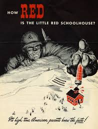
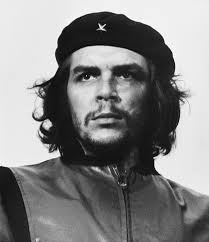

PAGINA DO MORTE RUBRA
* NOVO! * Pagina em construcao | APRESENTACAO | INDICE | SOBRE O COMUNISMO | LIVROS SELEÇÃO DE ARMAS & TECNOLOGIA
|
 |
ARQUIVO MORTE RUBRAUma pagina independente, feita na mao, sem patrocinio e sem medo. Aqui eu guardo manifestos, textos, livros e opinioes que nao passam na televisao. |
>> APRESENTACAO
Ola! Voce deve ter recebido o arquivo ou o link desse site. Ele e uma pagina criada apos o 4º mandato de Lula — nosso pais tem tido um grande aumento de manifestantes do comunismo.
Eu sou o criador dessa pagina e me refiro a mim pelo pseudonimo MORTE RUBRA. Sou simpatizante de movimentos punk e de extremistas de direita — claro, sei que e extremamente ironico.
Nessa pagina voce vai encontrar:
- Manifestos anti-comunistas
- Opinioes sobre o futuro do pais
- Como sobreviver
- [espaco reservado — escreva voce mesmo]
- Troca de livros e estudos anti-comunistas
- [espaco reservado — escreva voce mesmo]
>> O QUE E O COMUNISMO E ONDE ELE FALHA
1. O que e (na teoria)
O comunismo moderno nasce com O Manifesto Comunista (Marx e Engels, 1848) e com O Capital (1867). Em resumo: a historia seria a luta entre classes; o capitalismo exploraria o trabalhador pela extracao da mais-valia; a solucao seria abolir a propriedade privada dos meios de producao, tomar o Estado (a "ditadura do proletariado") e chegar a uma sociedade sem classes. Na versao de Lenin, o partido de vanguarda faria isso no lugar do proletariado.
2. As falhas praticas (calculo economico)
Sem propriedade privada e sem preços livres nao existe sinal de escassez. O debate do "calculo economico" (Mises, 1920; Hayek, 1945) aponta o problema central: um planificador nao tem como saber o custo real de nada. Resultado historico: filas, racionamento, desperdicio, produtos ruins e escassez em paises ricos em recursos. A URSS cresceu rapido na industrializacao forcada (1930-60), mas estagnou a partir dos anos 1970.
3. As falhas humanas (o custo em vidas)
- Holodomor (Ucrania, 1932-33): fome causada pela coletivizacao forcada; estimativas serias variam de ~3,5 a ~5 milhoes de mortos.
- Grande Salto Adiante (China, 1959-61): fome ligada as politicas de Mao; estimativas variam de ~15 a ~45 milhoes de mortos (os numeros sao disputados entre historiadores).
- Grande Terror (URSS, 1936-38) e o sistema de gulags: centenas de milhares de execucoes documentadas e milhoes de pessoas passando por campos de trabalho.
- Camboja (Khmer Vermelho, 1975-79): cerca de 1,5 a 2 milhoes de mortos, ~1/4 da populacao.
Observacao honesta: estimativas de mortalidade variam muito entre autores e devem ser tratadas como faixas, nao como numeros exatos.
4. As falhas politicas
Na pratica, "ditadura do proletariado" virou ditadura de um partido — e muitas vezes de uma pessoa. Sem imprensa livre, sem oposicao legal e sem eleicao disputada, nao ha mecanismo pacifico de correcao de erro. Isso vale para URSS, China maoista, Cuba, Coreia do Norte, Vietna, Angola, Etiopia, Nicaragua sandinista e outros.
5. O outro lado (para nao ser desonesto)
Defensores respondem que esses regimes foram "distorcoes" (stalinismo, maoismo) e nao comunismo de verdade, e citam alfabetizacao, industrializacao e saude publica como ganhos. O ponto fraco desse argumento e que todos os partidos comunistas que chegaram ao poder pela revolucao acabaram em regime de partido unico — o que sugere um problema estrutural, nao um acidente. Vale lembrar tambem que social-democracia nordica (Suecia, Noruega) nao e comunismo: tem propriedade privada, eleicoes e mercado.
6. Opiniao do autor (nao e fato, e opiniao)
A minha tese: o comunismo falha porque tenta resolver a desigualdade pela concentracao total de poder. Concentrar poder nao elimina a desigualdade, so muda quem manda. A alternativa que eu defendo e liberdade individual, propriedade privada, imprensa livre e Estado pequeno e vigiado.
>> FIGURAS HISTÓRICAS: A VERDADE SOBRE ERNESTO "CHE" GUEVARA
1. A Ascensão ao Poder e o Regime de Opressão
|
 |
A Insurreição e a Tomada de CubaErnesto "Che" Guevara projetou-se internacionalmente como um dos comandantes militares e ideológicos da Revolução Cubana (1953–1959), que culminou na derrubada do regime de Fulgencio Batista. Ao lado de Fidel Castro, Guevara prometia liberdade e justiça social; no entanto, o triunfo guerrilheiro rapidamente deu lugar a um modelo de estado totalitário de partido único alinhado ao bloco soviético. A Face Opressora e os FuzilamentosApós a vitória em 1959, Che Guevara foi nomeado diretor do Banco Nacional de Cuba e, subsequentemente, comandante da infame prisão de La Cabaña em Havana. Sob sua jurisdição direta, dezenas de opositores políticos, dissidentes, antigos aliados revolucionários que divergiam do rumo comunista e suspeitos de contrarrevolução foram sumariamente julgados e executados por fuzilamento sem direito a um processo legal justo. Em discursos oficiais da época, Guevara defendeu abertamente a violência estatal como ferramenta revolucionária, afirmando publicamente que não eram necessários procedimentos judiciais burocráticos para eliminar inimigos da revolução. Seu regime de controle institucionalizou a censura de imprensa, o fim da liberdade econômica, a supressão de sindicatos independentes e a perseguição sistemática a minorias e intelectuais dissidentes. |
2. O Fracasso na Bolívia e a Execução

|
A Tentativa de Guerrilha na América do SulInsatisfeito com os rumos burocráticos e afastado do círculo íntimo de poder em Cuba após desentendimentos estratégicos, Che Guevara abandonou o país na década de 1960 para tentar exportar a revolução armada para outros países. Após uma tentativa fracassada no Congo, Guevara entrou clandestinamente na Bolívia em 1966 com um pequeno grupo de guerrilheiros, tentando estabelecer um foco insurrecional na região de Ñancahuazú. Contudo, a empreitada foi um completo fracasso tático e político. Guevara falhou em obter apoio dos camponeses locais — que viam os estrangeiros armados com desconfiança —, foi isolado pela população e severamente fustigado pelas forças armadas bolivianas, que contavam com treinamento e inteligência estratégica de conselheiros militares dos Estados Unidos (incluindo agentes da CIA). A Captura e o Fim em La HigueraEncurralado, ferido e com sua tropa dizimada pela fome, doenças e deserções, Che Guevara foi cercado e capturado pelo exército boliviano em 8 de outubro de 1967 na quebrada de Yuro. Guevara foi levado para a escola abandonada na aldeia de La Higuera. No dia seguinte, 9 de outubro de 1967, por ordens diretas do alto comando do governo boliviano (liderado pelo presidente René Barrientos), Guevara foi executado sumariamente a tiros pelo sargento do exército Mario Terán. Seu corpo foi posteriormente amarrado aos patins de um helicóptero, transportado para Vallegrande para exibição pública e enterrado em uma vala clandestina, pondo fim à trajetória do guerrilheiro. |
>> MANIFESTOS ANTI-COMUNISTAS
MANIFESTO 01 — NADA ACIMA DO INDIVIDUO
1. Toda pessoa tem o direito de dizer, escrever, publicar e discordar.
2. Nenhuma ideia, partido, igreja ou Estado esta acima da critica.
3. Nenhuma utopia vale mais do que a vida concreta de uma pessoa.
4. Contra a ideologia, eu uso papel, tinta, argumento e voto.
5. Quem quer mudar o pais pela forca nao quer mudar o pais: quer tomar o lugar
de quem ja oprime.
Um manifesto de verdade nao pede violencia: ele pede que a sua ideia seja debatida em publico e perca ou vença no argumento.
>> O FUTURO DO PAIS — MINHAS OPINIOES
Opiniao, nao previsao: o cenario brasileiro seguiria dividido entre dois grupos que nao se ouvem, com a politica virando entretenimento e o debate economico sendo substituido por xingamento. As saidas que eu vejo: educacao basica de verdade, seguranca publica funcional, menos burocracia, imprensa independente e mais poder local (municipio decide mais, Brasilia decide menos).
>> COMO SOBREVIVER — KIT BASICO DE PREPARACAO
Nada de heroismo: sobreviver a crise, apagao, enchente ou desabastecimento e organizacao domestica e legalidade.
- Agua: 2 litros por pessoa/dia; reserve 7 dias. Filtro ou hipoclorito para tratar agua duvidosa.
- Comida: alimentos que nao estragam (arroz, feijao, enlatados, farinha, sal, acucar), 7 a 14 dias, girando o estoque.
- Saude: kit de primeiros socorros, remedios de uso continuo, copia de receitas, curso basico de primeiros socorros.
- Documentos: copias fisicas e digitais (RG, CPF, titulo, exames).
- Energia e informacao: lanterna, pilhas, radio a pilha, power bank, dinheiro em especie.
- Seguranca: iluminacao externa, tranca boa, combinado de vizinhos, rota de saida de casa e ponto de encontro da familia.
- Defesa pessoal: dentro da lei — treinar percepcao de risco, evitar conflito e conhecer as regras locais sobre qualquer meio de defesa. Arma e responsabilidade juridica serissima; nao e brinquedo.
- Renda: uma habilidade vendavel (conserto, cozinha, solda, programacao, enfermagem) vale mais que qualquer estoque.
>> TROCA DE LIVROS E ESTUDOS ANTI-COMUNISTAS
Minha estante basica (leia, discorde, anote na margem):
- O Caminho da Servidao — F. A. Hayek
- Acao Humana — Ludwig von Mises
- Arquipelago Gulag — Aleksandr Solzhenitsyn
- O Terror Soviético — Robert Conquest
- Origens do Totalitarismo — Hannah Arendt
- 1984 e A Revolucao dos Bichos — George Orwell
- Liberdade de Escolher — Milton e Rose Friedman
- A Sociedade Aberta e seus Inimigos — Karl Popper